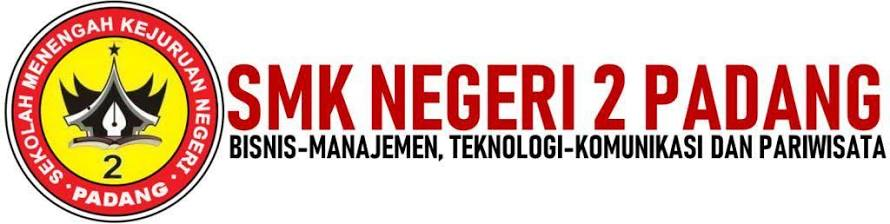
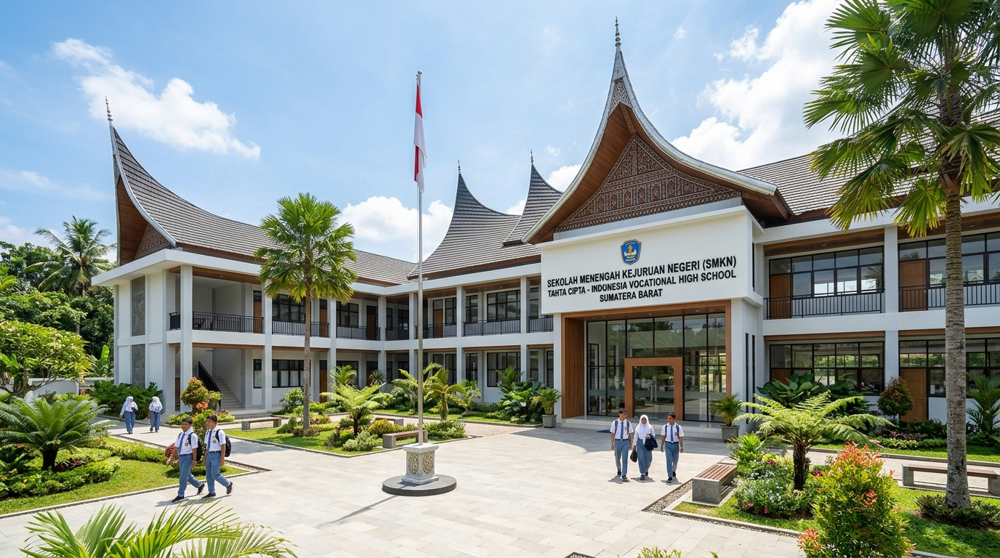
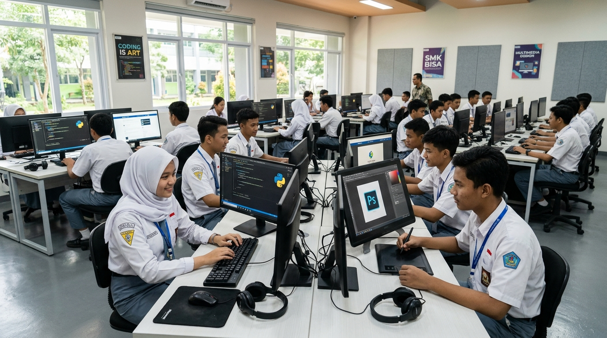
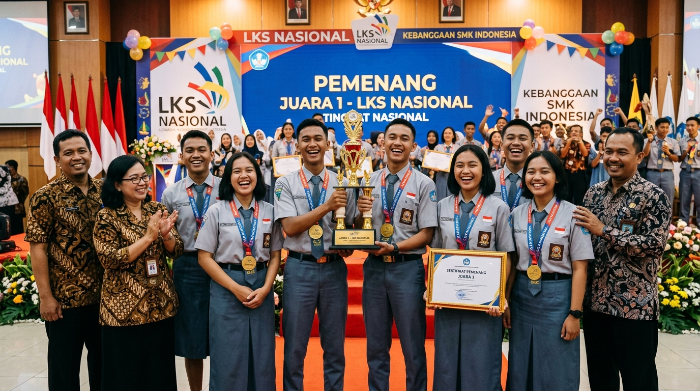

Mengenal lebih dekat sejarah, visi misi, fasilitas pembelajaran, akreditasi, dan tata tertib budaya sekolah.

SMK Negeri 2 Padang (dahulu dikenal sebagai SMEA Negeri 1 Padang) merupakan salah satu sekolah kejuruan tertua dan terbesar di Sumatera Barat. Didirikan dengan dedikasi tinggi untuk melahirkan insan vokasi yang terampil, berintegritas tinggi, dan adaptif terhadap perkembangan dunia usaha dan industri.
Dengan menyandang predikat SMK Pusat Keunggulan (SMK PK) dari Kemendikbudristek RI, SMKN 2 Padang telah menerapkan skema pembelajaran Teaching Factory, kurikulum berbasis industri 4.0, serta memiliki sertifikasi kompetensi berstandar BNSP.

Dedikasi lebih dari 7 dekade dalam membina generasi emas penerus bangsa di Sumatera Barat.
Didirikan pada tanggal 3 September 1952 dengan nama awal Sekolah Menengah Ekonomi Atas (SMEA) Negeri 1 Padang. Merupakan pelopor institusi pendidikan vokasi bidang kejuruan bisnis dan tata niaga di wilayah Sumatera Tengah.
Berdasarkan Keputusan Menteri Pendidikan dan Kebudayaan RI tentang penataan nomenklatur sekolah kejuruan, SMEA Negeri 1 Padang secara resmi berganti nama menjadi SMK Negeri 2 Padang.
Merespons revolusi komputerisasi, SMKN 2 Padang membuka program studi Rekayasa Perangkat Lunak (RPL), Teknik Komputer Jaringan (TKJ), Multimedia, serta Usaha Perjalanan Wisata untuk melengkapi rumpun Bisnis Manajemen.
Terpilih sebagai SMK Pusat Keunggulan skema pemadanan industri oleh Ditjen Pendidikan Vokasi Kemendikbudristek. Sekolah dilengkapi fasilitas laboratorium standar internasional dan kerjasama langsung dengan ratusan industri multinasional.
Mendukung suasana belajar yang kondusif, interaktif, serta berstandar industri kerja profesional.


Koleksi ribuan buku fisik dan e-library dengan akses referensi jurnal serta ruang baca yang tenang.
Koneksi internet serat optik (fiber optic) berkecepatan tinggi yang menjangkau seluruh area kampus.
Tempat ibadah yang luas dan asri untuk kegiatan ibadah sholat berjamaah serta pembinaan rohani siswa.
Lapangan basket, futsal, voli, dan bulutangkis untuk pembinaan kebugaran dan prestasi atletik.
Membentuk karakter profesional yang santun, disiplin, berintegritas, dan siap memasuki dunia kerja.